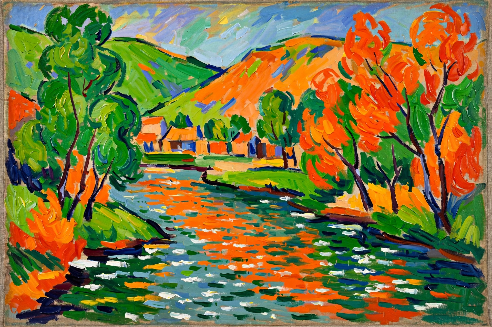

André Derain (10 June 1880 – 8 September 1954) was a French artist, painter, sculptor and co-founder of Fauvism with Henri Matisse. His intensely coloured landscapes of 1905–1906, painted at Collioure and in London, are among the landmark works of early modernism.
| André Derain | |
|---|---|
| Born | 10 June 1880, Chatou, France |
| Died | 8 September 1954 (aged 74), Garches, France |
| Movement | Fauvism |
| Known for | Painting, sculpture |
Derain met Matisse in 1900 and Maurice de Vlaminck while sketching along the Seine. In the summer of 1905 he worked with Matisse at Collioure, producing canvases of violent, arbitrary colour that shocked critics at the Salon d'Automne, where the group was dubbed les Fauves ("the wild beasts"). Commissioned by dealer Ambroise Vollard, Derain painted celebrated views of London — the Thames, Charing Cross Bridge and the Pool of London — in 1906.
After a brief Cubist phase and service in the First World War, Derain turned to a more classical, muted style, painting landscapes, portraits and still lifes and designing sets for Diaghilev's Ballets Russes, notably La Boutique fantasque (1919). His acceptance of an official trip to Berlin in 1941 during the German occupation damaged his postwar reputation.
André Derain — recreated from memory.